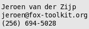

|
Consulting Services [Remove Frame]
|
|
FOX User Interface Development
|
FOX is a multi-platform toolkit for graphical user interfaces to applications. By using FOX for the user interface of your application, your application can, in most cases, be ported across several platforms by a simple recompile.
Since FOX uses C++ for its implementation, it can be interfaced easily to existing libraries and applications written in C++, C, and FORTRAN as well as many other programming languages.
Therefore large, existing software packages may be given a modern user interface without performing a complete code rewrite. Moreover, through the FOX toolkit, such applications are then simultaneously available on Microsoft Windows as well as Linux and other UNIX systems, such as workstations from HP, SGI, SUN, or IBM.
The FOX toolkit library is freely available, without fees or royalties, subject to the Lesser GPL License. However, in the course of incorporating the library into your application, you may find that you need various additional capabilities unique to your particular application, such as:
|
Technical and Engineering Software
|
Many Engineering Software companies have chosen to adopt FOX because it works on big 64-bit workstations. Software for these machines was historically developed using the Motif user interface. FOX has turned out to be a great replacement for Motif: while using many of the same concepts of layout managers, it is much more succinct and offers a larger, and more easily expandable, set of controls.
As a former Motif programmer myself, I estimate that it takes between one tenth to one twentieth the amount of code to construct user interfaces in FOX as compared to Motif.
Moreover, FOX offers finer control over layout placements and makes embedding icons in the user interface much simpler. Of course, it works on Windows, too...
A key feature in most Engineering Software is the ability to perform OpenGL drawing. FOX offers a number of easy to use Widgets for this, allowing designers to draw geometry on the screen without having to learn about OpenGL camera and lighting models.
As an example, look at the CFD (Computational Fluid Dynamics) and FEM (Finite Element Method) visualization and analysis code which was developed by CFD Research Corp. using the FOX Library. The image shows particle traces through a multi-zone, unstructured grid of an air flow problem around our favorite mascot.
I have been active in computer graphics and scientific data visualization software for many years, working on all aspects, ranging from writing special-purpose mini-programming languages to development of geometric and numerical algorithms.
|
Contact Information
|

|
|
{kind=link}